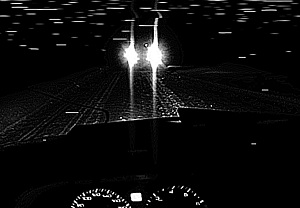

5/16/1985. Maintaining velocity in recovery operations is the most effective way to force SCP-745 pairs to split.
Item #: SCP-745
Object Class: Euclid
Special Containment Procedures: SCP-745's point of origin has been traced to an abandoned stretch of Highway ██ in northern New Mexico. The Foundation has purchased the surrounding land and the highway has been redirected. On-site security are disguised as Highway Patrol agents and are tasked with removing trespassers and capturing any new hunting pairs of SCP-745. Any SCP-745 creatures that are captured, live or dead, are to be loaded into class 3 BCU storage containers to await transport to Site 17. Containment procedures to preserve living specimens of SCP-745 are still being researched and no captured specimen has survived more than a week in captivity, but as there have been no new sightings of SCP-745 outside of its point of origin the species is presumed to be effectively contained. Requests for access to SCP-745 cadavers are to be forwarded to Dr. Langford directly.
Description: SCP-745 is a bipedal nocturnal predator. The head is a bloated sack of clear skin that lacks visible sensory organs or a skull. The brain of the creature can be directly observed and is wrapped in a web of bio-luminescent organs below the skin. Skin covering the rest of the body has a deep black coloration. Living specimens of SCP-745 are capable of producing a steady output of 1400 to 3200 lumens from their head. At night, this effectively obscures the rest of the body and gives the appearance of a floating point of light. When defending itself or communicating with other members of its species, this light has been observed to change color and flash in specific patterns. SCP-745's genetic structure is not carbon based.
SCP-745 almost exclusively hunts in pairs along remote sections of highway. Two specimens are capable of moving at speeds of up to 180 km per hour in perfect unison, taking the appearance of the headlights on a fast moving vehicle. SCP-745 targets lone vehicles on the highway, and hunting pairs will attempt to run the driver off the road by pursuing or charging their target. Once their prey swerves off the road or comes to a stop, the pair will separate to directly assault and consume the vehicle's occupants. SCP-745 has not yet been directly observed while feeding as captured specimens will not eat, and successful attacks have yet to leave any witnesses behind. SCP-745 rarely leaves any remains behind apart from scraps of clothing and shoes. Vehicles recovered after SCP-745 attacks rarely show any sign of forced entry and are covered with the child-like hand prints from SCP-745's front paws.
Addendum: No lairs, nests or young of SCP-745 have been found. SCP-745 had established a wide territory across the southwestern United States until Foundation teams began thinning their numbers in the 1960s, after which all recent SCP-745 sightings have been on the secured patch of land in New Mexico. Reports of phantom lights in other parts of the country have been investigated with no signs pointing to SCP-745 involvement.